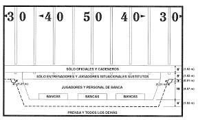

Reglas básicas del juego
El fútbol americano en la National Football League se juega entre dos equipos de 11 jugadores en el campo. El objetivo principal es avanzar el balón hasta la zona de anotación del rival para conseguir puntos. Esto se logra mediante jugadas ofensivas que pueden ser por pase o por carrera. El equipo tiene cuatro oportunidades (downs) para avanzar al menos 10 yardas; si lo consigue, obtiene un nuevo set de downs para continuar su ofensiva.
Sistema de puntuación
Existen varias formas de anotar puntos en la NFL. La más importante es el touchdown, que vale 6 puntos y se consigue cuando un jugador llega a la zona de anotación con el balón. Después del touchdown, el equipo puede intentar un punto extra (1 punto) o una conversión de dos puntos. También está el gol de campo, que vale 3 puntos, y el safety, que otorga 2 puntos al equipo defensivo cuando detiene al rival en su propia zona de anotación.
Duración y desarrollo del partido
Un partido de la National Football League se divide en cuatro cuartos de 15 minutos cada uno. Entre el segundo y tercer cuarto se realiza el medio tiempo. Si el marcador está empatado al final del tiempo reglamentario, se juega un tiempo extra (overtime) para definir al ganador. El juego combina estrategia, fuerza física y toma de decisiones rápidas, lo que lo convierte en un deporte dinámico y emocionante
